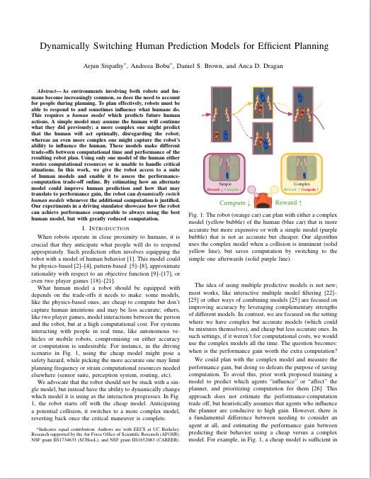

Dynamically Switching Human Prediction Models for Efficient Planning
|
University of California, Berkeley
|
Abstract
As environments involving both robots and humans become increasingly common,
so does the need to account for people during planning. To plan effectively,
robots must be able to respond to and sometimes influence what humans do. This
requires a human model which predicts future human actions. A simple model
may assume the human will continue what they did previously; a more complex one
might predict that the human will act optimally, disregarding the robot; whereas
an even more complex one might capture the robot’s ability to influence the human.
These models make different trade-offs between computational time and performance
of the resulting robot plan. Using only one model of the human either wastes computational
resources or is unable to handle critical situations. In this work, we give the robot
access to a suite of human models and enable it to assess the performance- computation
trade-off online. By estimating how an alternate model could improve human prediction and
how that may translate to performance gain, the robot can dynamically switch human models
whenever the additional computation is justified. Our experiments in a driving simulator showcase
how the robot can achieve performance comparable to always using the best human model, but with
greatly reduced computation.
Paper
|  |
Sripathy*, Bobu*, Brown, Dragan
Dynamically Switching Human Prediction Models for Efficient Planning
|